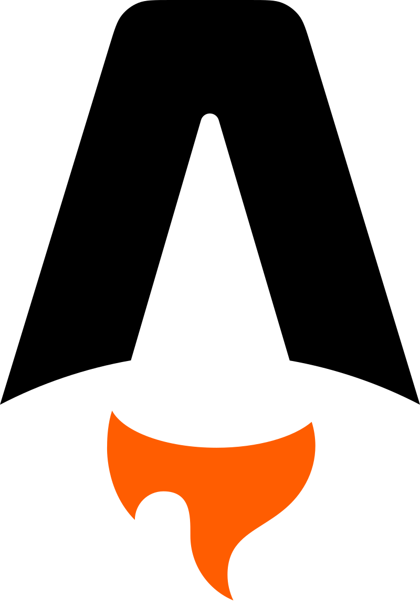
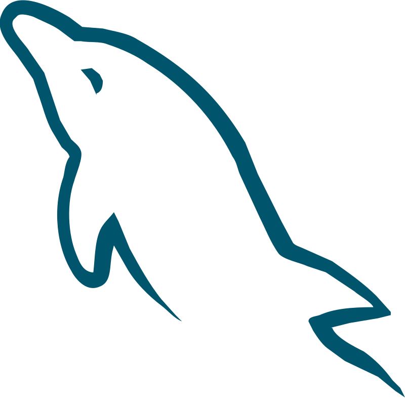
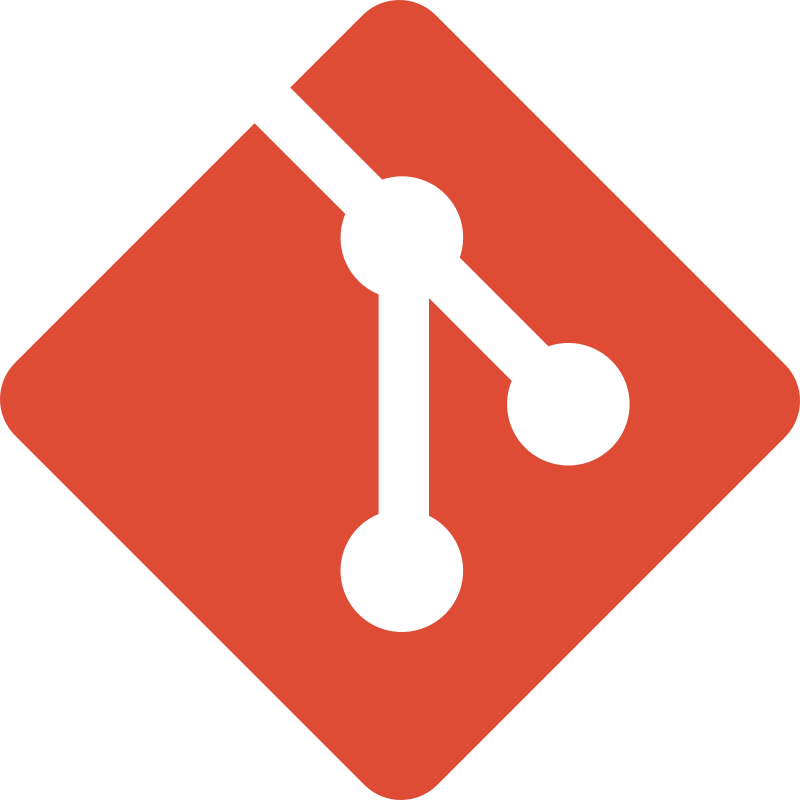

- HTML
- CSS
-
 JAVASCRIPT
JAVASCRIPT - JQUERY
- REACTJS
-

ASTRO - TAILWIND
- BOOTSTRAP
- JSON
- PHP
-

MYSQL - MARIADB
- SQLITE
-

GIT - GITHUB
Hey, soy Juan Palma
Disponible para TrabajarSoy desarrollador Frontend con más de dos años de experiencia, apasionado por el aprendizaje continuo y la adquisición de nuevas habilidades.
Técnico en Telecomunicaciones, especializado en instalaciones domiciliarias de HFC, FTTH y Red Neutra, actualmente me encuentro trabajando como Técnico especialista en Instalaciones domiciliarias en TechnoGroup, certificado por VTR. Además, cuento con más de 10 años de experiencia en el armado y reparación de computadoras. Resido en Peñaflor, Chile.
Mis Skills son:
Desarrollo web
Experiencia
-
Realización de cursos y proyectos sacados de Youtube
Realización de proyectos en Astro y React de Youtube para aprender nuevas tecnologías, técnicas y herramientas de programación
-
Realización varios cursos de programación
Realización de forma exitosa de varios cursos de programación web en la plataforma Platzi y en el programa Jóvenes Programadores de Biblioredes
-
Realización de varios cursos de Programación en Platzi y proyectos de Youtube.
Realización de varios cursos de Programación en Platzi y proyectos de Youtube en lenguajes como html, css, javascript, php, c#, React, los que serán detallados en la sección Cursos.
Certificaciones
| Id | Nombre Curso | Certificado |
|---|---|---|
| 1 | Curso Programación Basica |  |
| 2 | Curso Básico de C#, Fundamentos Variables y Operadores |  |
| 3 | Curso Básico de JavaScript |  |
| 4 | curso de frontend developer |  |
| 5 | curso practico de frontend developer |  |
| 6 | curso html y css practico |  |
| 7 | curso de fundamentos de punto net |  |
| 8 | curso definitivo html y css |  |
| 9 | curso introduccion al desarrollo backend |  |
| 10 | curso npm gestion de paquetes y dependencias en javascript |  |
| 11 | curso pensamiento logico de lenguajes de programación |  |
| 12 | curso de php instalacion fundamentos y operaciones basico |  |
| 13 | curso practico de php |  |
| 14 | curso integracion de php y html |  |
| 15 | curso prework linux: Configuracion de entorno de desarrollo en linux |  |
| 16 | curso prework: configuracion de entorno de desarrollo en windows |  |
| 17 | curso javascript nivel 1 - Jóvenes Programadores |  |
| 18 | curso javascript nivel 2 - Jóvenes Programadores |  |
| 19 | Curso PHP nivel 1 - Jóvenes Programadores |  |
| 20 | Curso CSS - Jóvenes Programadores |  |
| 21 | Curso Introducción a Python - Jóvenes Programadores |  |
| 22 | Curso de React - Jóvenes Programadores |  |
Proyectos
- Realizado en Octubre, 2024
Landing page de la JSConf2024 (NO OFICIAL)
Confección de la landing de la JSConf no oficial, realizado con Astro, Tailwind y CSS nativo. - Realizado en Abril, 2024
Landing page de la Velada IV
Confección de la landing de la Velada IV copiada de @Midudev, realizado con Astro, Tailwind y CSS nativo. - Realizado en marzo, 2024
Porfolio minimalista configurado desde un Json para imprimir
Versión de porfolio minimalista configurable con un json y con la posibilidad de imprimir, hecho con Astro y CSS nativo. - realizado en Enero, 2024
Porfolio-dev
Porfolio Dev realizado con Astro, Tailwind y Flowbite. - Realizado en Julio, 2022
Portafolio Web con HTML, Css Nativo, JavaScript
Primer porfolio realizado con HTML, CSS nativo, harcodeando los certificados uno por uno, posteriormente se le agregó javascript y se renderizaron dinámicamente los cursos, JQuery y Bootstrap para mejorar la responsividad. - Realizado en Febrero de 2024
Portafolio 3
Ejercicio de Portafolio creado con html, css, javascript, jquery, bootstrap
Contacto:
Si deseas contactarme puedes hacerlo a través de los siguientes links.
Subir